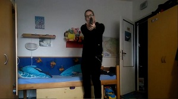
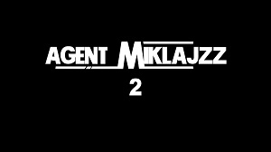
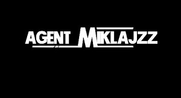
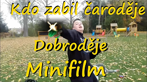
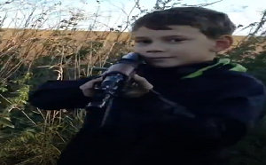

Agent Miklajzz
Akční\Komedie
Jedná se o originální verzi Agenta Miklajzze kde účinkuje nejvíce herců než v jakémkoliv pokračování tohoto filmu. Z této verze vycházejí všechna díla filmové triologie Agent Miklajzz.
detaily filmu

Agent Miklajzz remaster
Akční\Komedie\Dobrodružný
Toto dílo je remake původního dílu agenta Miklajzze. Nachází se zde rozšíření příběhu i přidání mnohých postav. Z původních herců zde však hraje jenom jeden který přebírá i hlavní roli Agenta Milajzze.
detaily filmu

Agent Miklajzz 2
Akční\Komedie\Dobrodružný
Agent Miklajzz 2 je doposud největší film z Lounského Regionu,i díky tomu že zde hrají dva herci z původního Agenta Miklajzze. Tento film se natáčel v zcela nové lokaci.
detaily filmu

Agent Miklajzz celý film
Akční\Komedie\Dobrodružný
Tento film je sjednocení všech Agent Mikljazz filmů do jednoho ale nachází se zde i nové záběry. Film obsahuje díla Agent MIklajzz remaster a Agent Miklajzz 2.
detaily filmu

Kdo zabil čaroděje Dobroděje?
Komedie\Akční\Dobrodružný
Krátký hraný film, který paroduje Africký film: Who killed captain Alex? Jak jméno naznačuje, je to film o pomstě Dobroděje. Má komedický žánr, ale končí tragicky.
detaily filmu

Kids war
Akční\Válečný film
Tento film zobrazuje krutou realitu života v Čeradické mládeže. Specificky popisuje spor o židovký hřbitov a mysliveckou chatu (Sud) v Čeradicích.
detaily filmu